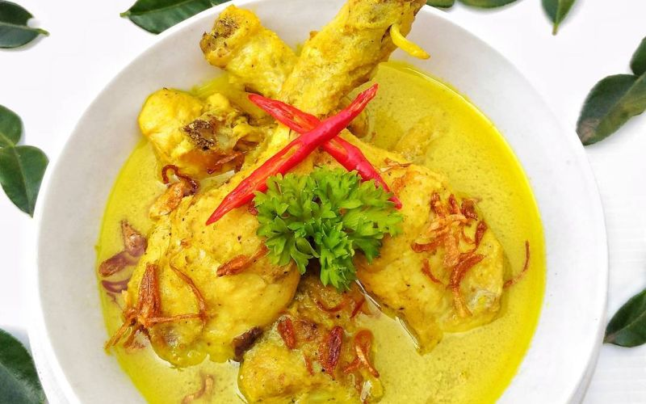

Resep opor ayam
Ilustrasi opor ayam
Opor Ayam merupakan masakan sejenis kari ayam yang sangat dikenal di Indonesia. Masakan ini telah dikenal luas di daerah lain. Bahkan hampir ke seluruh wilayah Indonesia.
Bahan-bahan opor ayam
- 500 gram daging giling
- 100 gram ayam giling
- 3 siung bawang putih, iris tipis
- 6 butir bawang merah, iris tipis
- 2 buah cabai merah, cincang halus
- 2 sendok teh kari bubuk
- 1 sendok teh garam
- 1/4 sendok teh merica bubuk
- 1/2 sendok teh gula pasir
- 1 batang daun bawang, diiris halus
- 1 sendok makan minyak untuk menumis
- 8 buah bawang merah
- 3 buah bawang putih
- 4 buah kemiri sangrai
- 1 sendok teh ketumbar bubuk
- ½ sendok teh jintan bubuk
- ½ sendok teh merica bubuk
- ½ sendok makan jahe parut atau dicincang
- 1 sendok makan lengkuas parut atau dicincang
- Garam dan gula sesuai selera
bahan:
Bahan halus:
cara memasak :
- Cuci bersih ayam. Kemudian bumbui ayam dengan 1sdt dan 1 sdm air asam. Diamkan ayam selama 15 menit agar bumbu meresap.
- Sementara menunggu ayam, siapkan bumbu. Panaskan minyak, tuang 3 sdm minyak untuk menumis. Masukan bumbu halus, daun salam, daun jeruk purut dan serai. Tumis bumbu sampai harum.
- Setelah bumbu harum, masukkan ayam dan masak hingga tercampur rata dan ayam menjadi kaku dan berubah warna. Kemudian tuangkan santan cair, masak sampai mendidih sambil diaduk sesekali.
- Setelah mendidih, tambahkan santan kental. Kemudian masak ayam dengan api kecil sambil diaduk-aduk, agar santan tidak pecah. Tambahkan garam dan icip rasanya
- Matikan kompor ketika ayam sudah empuk. Angkat.
- Opor ayam siap disajikan. Kamu bisa menambahkan taburan bawang goreng di atas opor.